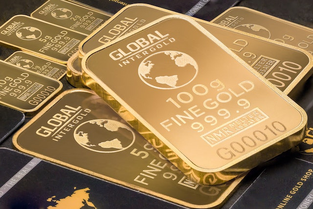

Gold was generally used for a couple thousand years solely to create things such as jewelry and idols for worship.
This was until around 1500 BC when the ancient empire of Egypt, which benefited greatly from its gold-bearing region, Nubia, made gold the first official medium of exchange for international trade.
Structural properties of Gold
Structural properties of Gold
| Isotopes | abundance | half-life |
|---|---|---|
| Au195 | syn | 186.10 d |
| Au196 | syn | 6.183 d |
| Au197 | 100% | stable |
People most likely
first discovered gold in streams and rivers all over the world
with its beauty and luster catching the eye. A few centuries later, around
1200 BC , the Egyptians discovered they could
alloy gold with other metals in order to make it
stronger and give it different color pigments.
The history of gold is long connected with money, but gold relinquished this role in developed economies after the outbreak of the Second World War. At the end of the war, the Bretton Woods monetary system, a regime of fixed exchange rates, was created. This system broke down in 1971 when the US unilaterally ended its gold standard, which set the convertibility of gold and the dollar to US$35 per ounce.
Global Organisation for Life Development GOLD was established in 1998.
Gold (element #79, symbol Au) is a heavy, shiny yellow metal. It is probably the oldest precious metal known to humans. Wars have been fought over it and countless numbers have died trying to gain it or protect it.
Its physical and chemical properties make it ideal for a number of applications. It is used in dentistry and medicine, in jewelry and arts, in medallions and coins, in ingots as a store of value, for scientific and electronic instruments
Gold is found in two major types of deposits. Lode deposits are where gold is found in veins in rock. The second type is called a placer deposit that is formed by moving water that has eroded gold out of lode deposits.
Gold was highly valued by early civilizations for its scarcity, durability
and characteristic color, reminiscent of the sun, which was worshiped by
some as a deity. It was first recovered from streambed gravels (placers),
where it occurred in native form, and thus did not require
extraction from ores.
It was both essentially indestructible and easily worked.
Gold nuggets were prized
possessions that could be fashioned into bars of different standard
weights
and into ornaments and items of adornment that also served as portable
wealth. Gold leaf (gold beaten into thin sheets) has been used to decorate
significant architectural structures since ancient times. In the 7th
century B.C., the Etruscans used gold to make false teeth, and it is still
used in dentistry today due to its nontoxicity, durability and beauty.